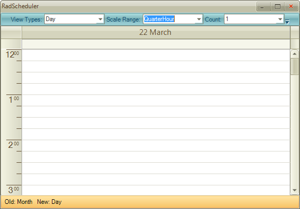

Views Walkthrough
In this walkthrough (part of the Telerik UI for WinForms Step-by-step Tutorial) you will
dynamically change the view, change some of the view specific properties and
handle the ActiveViewChanging event.
Project Setup
Create a new Windows Forms application.
In the Solution Explorer, delete the default form.
Also in the Solution Explorer, right-click the project and select Add | New Item... from the context menu.
Select the "Telerik RadForm" template and click the Add button to close the dialog.
Add the DesertTheme from the ToolBox to the form.
In the Properties window, set the form ThemeName to Desert.
Add a RadStatusStrip to the form. Set the
ThemeName to Desert. Add a
RadLabelElement to the status strip. Set the Name property
to "lblStatus" and the Text to "".Add a RadCommandBar to the form. Add elements to the bar:
Add a
RadCommandBarDropDownListItem. Set the
Name to "ddlActiveViewType" and
Text to "".Add a
RadCommandBarDropDownListItem. Set the
Name to "ddlRange" and Text to
"".Add a
RadCommandBarDropDownListItem. Set the
Name to "ddlACount" and Text to
"".
Change the new RadForm1 to be the startup form.
From the Toolbox, add a RadScheduler to the form and
set the Dock property to "Fill" and the
ThemeName to Desert.Add code to the form load that will add values to the combo boxes in
the tool strip for SchedulerViewType and
ScaleRange enumerations. Also, add a simple range of
integers to the "count" combo box.
[C#]
foreach (SchedulerViewType viewType in Enum.GetValues(typeof(SchedulerViewType)))
{
RadListDataItem item = new RadListDataItem();
item.Text = viewType.ToString();
item.Value = viewType;
ddlActiveViewType.Items.Add(item);
}
foreach (ScaleRange range in Enum.GetValues(typeof(ScaleRange)))
{
RadListDataItem item = new RadListDataItem();
item.Text = range.ToString();
item.Value = range;
ddlRange.Items.Add(item);
}
for (int i = 1; i < 10; i++)
{
RadListDataItem item = new RadListDataItem();
item.Text = i.ToString();
item.Value = i;
ddlCount.Items.Add(item);
}
[VB.NET]
For Each viewType As SchedulerViewType In System.Enum.GetValues(GetType(SchedulerViewType))
Dim item As New RadListDataItem()
item.Text = viewType.ToString()
item.Value = viewType
ddlActiveViewType.Items.Add(item)
Next viewType
For Each range As ScaleRange In System.Enum.GetValues(GetType(ScaleRange))
Dim item As New RadListDataItem()
item.Text = range.ToString()
item.Value = range
ddlRange.Items.Add(item)
Next range
For i As Integer = 1 To 9
Dim item As New RadListDataItem()
item.Text = i.ToString()
item.Value = i
ddlCount.Items.Add(item)
Next i
- Next add a SelectedIndexChanged event handler for the ddlActiveViewType combo box:
[C#] Set the current ActiveViewType
void ddlActiveViewType_SelectedIndexChanged(object sender, Telerik.WinControls.UI.Data.PositionChangedEventArgs e)
{
RadDropDownListElement dropDownList = sender as RadDropDownListElement;
radScheduler1.ActiveViewType = (SchedulerViewType)(dropDownList.SelectedValue);
}
[VB.NET] Set the current ActiveViewType
Private Sub ddlActiveViewType_SelectedIndexChanged(ByVal sender As Object, ByVal e As Telerik.WinControls.UI.Data.PositionChangedEventArgs)
Dim dropDownList As RadDropDownListElement = TryCast(sender, RadDropDownListElement)
RadScheduler1.ActiveViewType = CType(dropDownList.SelectedValue, SchedulerViewType)
End Sub
- Add another SelectedIndexChanged event handler for the ddlRange combo box element:
[C#] Set the RangeFactor
void ddlRange_SelectedIndexChanged(object sender, Telerik.WinControls.UI.Data.PositionChangedEventArgs e)
{
RadDropDownListElement dropDownList = sender as RadDropDownListElement;
ScaleRange range = (ScaleRange)(dropDownList.SelectedValue);
// set the appropriate range factor based on the type of view
switch (radScheduler1.ActiveViewType)
{
case SchedulerViewType.Day:
(radScheduler1.ActiveView as SchedulerDayView).RangeFactor = range;
break;
case SchedulerViewType.MultiDay:
(radScheduler1.ActiveView as SchedulerMultiDayView).RangeFactor = range;
break;
case SchedulerViewType.Week:
case SchedulerViewType.WorkWeek:
(radScheduler1.ActiveView as SchedulerWeekView).RangeFactor = range;
break;
}
}
[VB.NET] Set the RangeFactor
Private Sub ddlRange_SelectedIndexChanged(ByVal sender As Object, ByVal e As Telerik.WinControls.UI.Data.PositionChangedEventArgs)
Dim dropDownList As RadDropDownListElement = TryCast(sender, RadDropDownListElement)
Dim range As ScaleRange = CType(dropDownList.SelectedValue, ScaleRange)
' set the appropriate range factor based on the type of view
Select Case RadScheduler1.ActiveViewType
Case SchedulerViewType.Day
TryCast(RadScheduler1.ActiveView, SchedulerDayView).RangeFactor = range
Case SchedulerViewType.MultiDay
TryCast(RadScheduler1.ActiveView, SchedulerMultiDayView).RangeFactor = range
Case SchedulerViewType.Week, SchedulerViewType.WorkWeek
TryCast(RadScheduler1.ActiveView, SchedulerWeekView).RangeFactor = range
End Select
End Sub
- Add another SelectedIndexChanged event handler for the ddlCount combo box element:
[C#] Set the DayCount or WeekCount
void ddlCount_SelectedIndexChanged(object sender, Telerik.WinControls.UI.Data.PositionChangedEventArgs e)
{
RadDropDownListElement dropDownList = sender as RadDropDownListElement;
int count = (int)dropDownList.SelectedValue;
// set the Day or WeekCount based on the current view
switch (radScheduler1.ActiveViewType)
{
case SchedulerViewType.Day:
(radScheduler1.ActiveView as SchedulerDayView).DayCount = count;
break;
case SchedulerViewType.MultiDay:
(radScheduler1.ActiveView as SchedulerMultiDayView).DayCount = count;
break;
case SchedulerViewType.Month:
(radScheduler1.ActiveView as SchedulerMonthView).WeekCount = count;
break;
}
}
[VB.NET] Set the DayCount or WeekCount
Private Sub ddlCount_SelectedIndexChanged(ByVal sender As Object, ByVal e As Telerik.WinControls.UI.Data.PositionChangedEventArgs)
Dim dropDownList As RadDropDownListElement = TryCast(sender, RadDropDownListElement)
Dim count As Integer = CInt(Fix(dropDownList.SelectedValue))
' set the Day or WeekCount based on the current view
Select Case RadScheduler1.ActiveViewType
Case SchedulerViewType.Day
TryCast(RadScheduler1.ActiveView, SchedulerDayView).DayCount = count
Case SchedulerViewType.MultiDay
TryCast(RadScheduler1.ActiveView, SchedulerMultiDayView).DayCount = count
Case SchedulerViewType.Month
TryCast(RadScheduler1.ActiveView, SchedulerMonthView).WeekCount = count
End Select
End Sub
- Handle the RadScheduler ActiveViewChanging event. Use the SchedulerViewChangingEventArgs OldView and NewView to display in the status label.
[C#] Handling the ActiveViewChanging event
void radScheduler1_ActiveViewChanging(object sender, SchedulerViewChangingEventArgs e)
{
lblStatus.Text = String.Format("Old: {0} New: {1}",
e.OldView.ViewType.ToString(), e.NewView.ViewType.ToString());
}
[VB.NET] Handling the ActiveViewChanging event
Private Sub radScheduler1_ActiveViewChanging(ByVal sender As Object, ByVal e As SchedulerViewChangingEventArgs)
lblStatus.Text = String.Format("Old: {0} New: {1}", e.OldView.ViewType.ToString(), e.NewView.ViewType.ToString())
End Sub
- Run the application and test the various combinations of settings. 